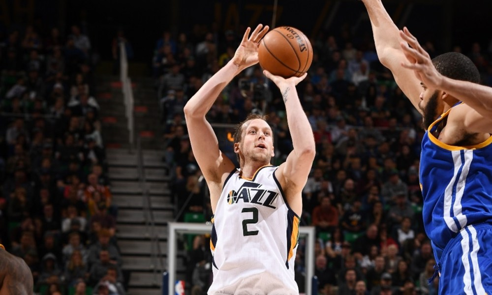
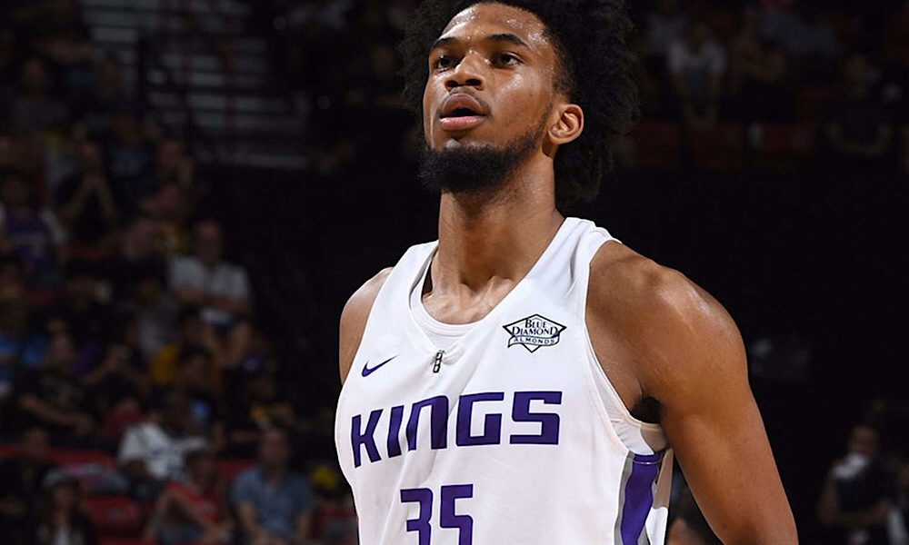
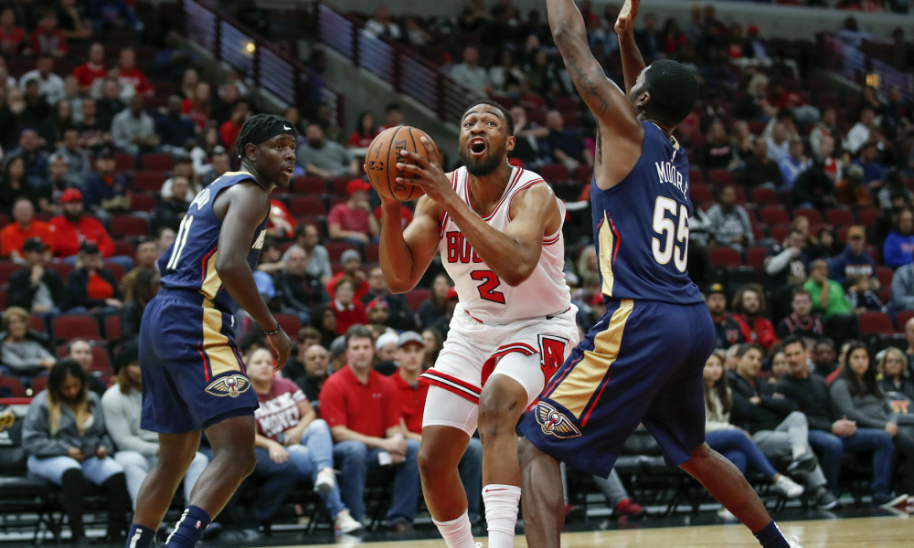

Game 1: Miami Heat at Indiana Pacers
My Pick:
Indiana Pacers
Why I'm Rolling with them:
These two teams played a week ago, and I feel like I could just recycle my reasoning from then. I still have more faith in Oladipo than I do anyone on the Heat roster, and the pieces surrounding him are also more talented. The Heat have a reputation of being a gritty team that isn't afraid to get rough to get a win, but that's also how this Pacers team has been playing. If it comes to another grind-it-out battle, I'm going to take the Pacers every time. Indiana 111-105.
Game 2: Utah Jazz at Philadelphia 76ers
My Pick:
Philadelphia 76ers
Why I'm Rolling with them:
The 76ers are theoretically the far better team in this matchup. They still need time to click and figure out how to incorporate Butler into their system, but on an individual level Butler, Simmons and Embiid are far better than their Jazz counterparts. The battle in the paint will be intense, as two of the leagues best rim protectors will be battling for supremacy. Butler should be able to lock up Mitchell nicely, and do some damage offensively as well. Sixers take it 118-110.
 Joe Ingles could be the X-Factor in this game for the JazzGame 3: Brooklyn Nets at Washington Wizards
My Pick:
Washington Wizards
Why I'm Rolling with them:
The Wizards may have hit their stride, winning three in a row to bring their record up to 5-9. Brooklyn on the other hand have lost 3 straight since the loss of LeVert, and don't look to stop the freefall any time soon. Washington has been getting better defensively, limiting teams to only 107 points per game on this win streak. That could be enough to turn the tide against the Nets, who don't have a go-to guy now that LeVert is out. Washington, 112-106.
Game 4: Toronto Raptors at Boston Celtics
My Pick:
Boston Celtics
Why I'm Rolling with them:
As a Toronto fan, this one hurts but I've seen firsthand the importance of the Celtics homecourt advantage. The Celtics have finally looked cohesive in a 29 point win over the Bulls, that saw six different Celtics score in double digits. Ibaka matches up nicely against Horford at the Center position, and I would say these two rosters look as even as it gets, although I think Toronto's forwards have the advantage as Kahwi and Siakam are better than Hayward and Tatum (looking solely at the current season). But the Raptors have some questions regarding playing good teams that I still think need to be ironed out. Celtics, 112-110.
Game 5: Sacramento Kings at Memphis Grizzlies
My Pick:
Sacramento Kings
Why I'm Rolling with them:
I'm absolutely high on the Kings and low on the Grizzlies, probably because I love Fox with all my heart. He's mesmerizing to watch and I am excited to see him go up against Mike Conley, who said he saw some of himself in Fox. These two teams have already played once this year, which resulted in a Sacramento win. I have faith that as long as they come out and do their job, Sacramento will be able to outclass the Grizzlies in enough areas to beat them 117-112.
 Marvin Bagley has been having a good start to his rookie seasonGame 6: New York Knicks at New Orleans Pelicans
My Pick:
New Orleans Pelicans
Why I'm Rolling with them:
The Pelicans are absolutely the better of the two teams, and perhaps more importantly they match up better at key positions. Jrue Holiday is on a DPOY campaign, holding top-tier point guards to below average games, so he should be able to significantly hamper Tim Hardaway Jr. Without Hardaway Jr, the Knicks don't have a go-to scorer to push them over the edge in this game. That's without even mentioning Anthony Davis, who should put up excellent stats against a weaker NY defense. Pelicans, 123-109.
Game 7: Portland Trail Blazers at Minnesota Timberwolves
My Pick:
Portland Trail Blazers
Why I'm Rolling with them:
This Minnesota team is still a relatively unknown quantity, and I'm not sure where to feel on the issue of their new roster. It seems to me like they're going to be a solid team, and Covington should help them on the defensive end. Towns and Wiggins still need to improve though, and at this point in time the Blazers are just the better team. Lillard and McCollum don't really have anyone to guard them at their respective positions on the Wolves, and should be enough to carry Portland to a 119-112 win.
Game 8: Chicago Bulls at Milwaukee Bucks
My Pick:
Milwaukee Bucks
Why I'm Rolling with them:
Chicago got blown out by Boston the other day, and I can't see them faring any better against this dominant Milwaukee team. Parker will be back in Milwaukee, and I wouldn't be surprised to see him trying to do more against his old team. Giannis at the 4 should have a field day against his weak defense, and I'm excited to see him put up an insane statline. As a whole the Bucks are a better team through and through. Bucks 120-108.
 Jabari Parker left Milwaukee this offseason, and makes his return tonight.